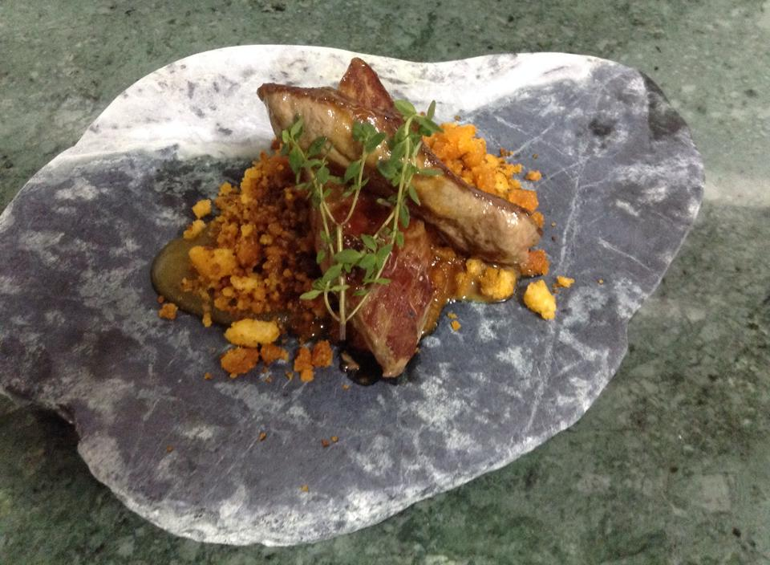

Are you hungry today and don't know where to go?
Most famous restaurants of the city
Az-Zait
This restaurant, which takes its name from an Arabic word meaning “olive juice”, is constantly developing, demonstrating technical expertise and conviction in all its dishes. There’s a pleasant entrance, where guests can choose from a selection of tapas dishes, two classic-style dining rooms in which to enjoy impeccable service, plus extra details such as an impressive cheese trolley
|  |  |
 |
Restaurante Cañabota
Enjoy their live cooking and their embers; they do everything in front of you because creating a very pleasant environment. You can eat a la Carte or Tasting Menu, at the table or at their gastronomic bar,… whatever you choose, but they will give everything to make your experience unique.
La Cayetana
Plaza del Duque de la Victoria is something you cannot miss before enjoying an amazing meal at this restaurant. Among other Mediterranean and Spanish cuisine establishments in which to eat, La Cayetana Bistro Andalú may be among the most recognized. You can have some unique potatoes, a generous potato omelette and a perfectly prepared laing in this place. Savor its attractive fruit cake, its surprising cheesecake and its delicate ice creams
Los Tulipanes
Come and have a drink after that long walk through the Museum of Fine Arts of Seville. Carpe diem: its Spanish cuisine is waiting for you. Its chefs here prepare tasty Spanish tapas, unique potatoes and homemade laing. This bar will please you with its well-prepared panna cotta, its amazing ice creams and its well-made pancakes. Here you can drink an unbeatable sangria, an irresistible beer or an extraordinary cordial. This place is known for its great coffee